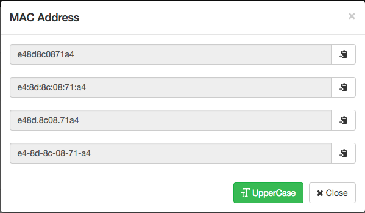
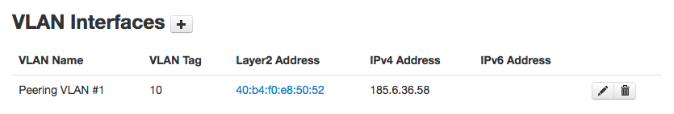

MAC Addresses
IXP Manager has support for layer2 / MAC addresses in two ways:
- Discovered Addresses: a read-only table via an admin menu option called MAC Addresses -> Discovered Addresses which lists entries from a database of MAC addresses which are sourced via a script from the IXP's switches directly. (Available since version 3.x).
- Configured Addresses: a managed table of layer2/MAC addresses, viewed by the admin menu option MAC Addresses -> Configured Addresses. These are assigned by IXP administrators on a per VLAN interface basis. (Available since version 4.4).
Configured Addresses
In early 2017, INEX migrated its primary peering LAN from a flat layer2 with spanning tree design to a VxLAN set-up with automation via Salt and Napalm (we will insert references to presentations here once we complete all required functionality).
Part of the requirements for this automation (and this was an existing feature request from other IXPs) was the management of MAC addresses within IXP Manager and, rather than assigning them to a virtual interface, assign them to specific VLAN interfaces.
Outside of our automation and VXLAN, other uses included:
- to potentially allow members to add a MAC address during maintenance and thus have the system update a layer2 acl on the switch(es);
- a static maintained database of MAC addresses for EVPN;
- a static maintained database for lookups.
The features of this system are listed below.
Listing and Searching Existing Configured MAC Addresses
There is a new menu option (left hand side menu) under MAC Addresses called Configured Addresses. This lists all configured MAC addresses including the OUI manufacturer (see below), associated switch / switch port(s), customer name, IPv4 and v6 addresses. You can also:
- as-you-type search from the datatable search box (lowercased and filtered to a normalised MAC address);
- restrict the view to a single VLAN;
- action-to-move to layer 2 address add / edit / delete for a given VLAN interface;
- click on a MAC to bring up a pop-up, allowing you to copy in different formats:

Adding / Removing Layer2 Addresses to/from a VLAN Interface
When editing a customer's interface in the usual manner (customer overview -> Ports -> edit button), you will now see MAC address(es) under VLAN Interfaces:

In the event that there is zero or more than one MAC address, the MAC address demonstrated above will be replaced with an appropriate note to indicate this.
Clicking on the MAC address (or note when none / multiple) will bring you to the configured MAC address management page for this VLAN interface. Addresses can be added / removed on this page. MAC addresses can be entered in either upper or lower cases and can optionally include characters such as ., :, -. These are all stripped before validation and insertion.
Extracting Addresses
As automation features are still a work in progress, not all methods are listed here. Please open an issue on GitHub or start a discussion on the mailing list for whatever methods you would like.
Currently implemented (see the API page for access details):
- An API to be used by the sflow / peer to peer graphing tool:
- Virtual Interface ID to MAC address - GET request to: https://ixp.example.com/api/v4/vlan-interface/sflow-mac-table
- Virtual Interface ID, VLAN interface ID, customer name and VLAN tag - GET request to: https://ixp.example.com/api/v4/vlan-interface/sflow-matrix
- YAML export for automated provisioning. As yet undocumented and not suitable for general use.
- Querying the database directly. Not usually recommended as the schema may change.
Migrating Discovered MACs to Configured MACs
INEX's use case was to switch from the discovered MAC addresses table to the configured MAC addresses table without the need to data fill all preexisting ~200 MACs. As such we have created an Artisan migration script which can be run with:
php $IXPROOT/artisan l2addresses:populate
You will be prompted as follows:
Are you sure you wish to proceed? This command will CLEAR the layer2address table and then copy addresses from the read-only macaddress table. Generally, this command should only ever be run once when initially populating the new table.
One thing to note: as the discovered MAC Addresses table is per virtual interface and the new configured MAC address functionality is per VLAN interface, any MAC from discovered MAC Addresses that is populated into configured MAC Addresses will be populated for every VLAN interface associated with the virtual interface.
The script prints notices for these such as:
Created >1 layer2address for [member name]] with virtual interface: https://www.example.com/ixp/virtual-interface/edit/id/235
The inclusion of the URL makes it easy to double check the result.
For obvious reasons, we only allow a single / unique layer2 address per VLAN. In the event that the script tries to add the same MAC more than once, it will print:
Could not add additional instance of 001122334455 for [Customer]] with virtual interface: https://www.example.com/ixp/virtual-interface/edit/id/265 as it already exists in this Vlan [VLAN name]
These should all be checked manually.
A useful SQL command to double check the results for me was:
SELECT mac, COUNT(mac) AS c FROM l2address GROUP BY mac HAVING COUNT(mac) > 1;
Discovered MAC Addresses
This was the original functionality - a read-only table via an admin menu option called MAC Addresses -> Discovered Addresses which lists entries from a database of MAC addresses which are sourced via a script from the IXP's switches directly.
At an IXP, it can be extremely useful to have a quick look up table to see what member owns what MAC address - especially when they start injecting illegal packets into the exchange fabric.
We have a script, update-l2database.pl, for this. To set it up (using Ubuntu as an example), proceed as below. We are in the process of trying to reduce the reliance on the perl library and direct database access. But for now, this script still requires it.
# If you haven't already, install the Perl library for IXP Manager:
apt-get install libnet-snmp-perl libconfig-general-perl libnetaddr-ip-perl
cd $IXPROOT/tools/perl-lib/IXPManager
perl Makefile.PL
make install
# Then copy and edit the configuration file to set the database connection settings:
cp $IXPROOT/tools/perl-lib/IXPManager/ixpmanager.conf.dist /usr/local/etc/ixpmanager.conf
joe /usr/local/etc/ixpmanager.conf #and set database settings
# Now copy the script:
cp $IXPROOT/tools/runtime/l2database/update-l2database.pl /usr/local/bin
# and then add it to your periodic cron job with:
/usr/local/bin/update-l2database.pl
OUI Database
IXP Manager can store the IEEE OUI database and reference it to show the manufacturer behind a MAC address.
Populating and Updating the OUI Database
The OUI is updated weekly by the task scheduler. You can force an update with the following Artisan command:
php $IXPROOT/artisan utils:oui-update
which will populate / update the OUI database directly from the latest IEEE file from their website.
A specific file can be passed via the file parameter. You can also force a database reset (drop all OUI entries and re-populate) via the --refresh option.
Neither of these options are typically necessary.
End User Access
In v4.7.3 we introduced the ability for logged in users to management their own configured MAC addresses.
This is disabled by default but can be enabled with the following .env settings:
# Set this to allow customers to change their own configured MAC addresses:
IXP_FE_LAYER2_ADDRESSES_CUST_CAN_EDIT=true
# The following defaults are configured for min/max MAC addresses
IXP_FE_LAYER2_ADDRESSES_CUST_PARAMS_MIN_ADDRESSES=1
IXP_FE_LAYER2_ADDRESSES_CUST_PARAMS_MAX_ADDRESSES=2
When a MAC is added, a IXP\Events\Layer2Address\Added event is triggered and, similarly, when a MAC is deleted a IXP\Events\Layer2Address\Deleted event is triggered. We have created an event listener for these to fire off an email in both cases. To enable this listener, set the following .env settings:
# Trigger an email when a superuser adds/deletes a MAC:
IXP_FE_LAYER2_ADDRESSES_EMAIL_ON_SUPERUSER_CHANGE=true
# Trigger an email when a customer user adds/deletes a MAC:
IXP_FE_LAYER2_ADDRESSES_EMAIL_ON_CUSTOMER_CHANGE=true
# Destination address of the email:
IXP_FE_LAYER2_ADDRESSES_EMAIL_ON_CHANGE_DEST=ops@ixp.example.net
There are two files you can consider skinning with this functionality:
resources/views/layer2-address/emails/changed.blade.php- the email which is sent when a MAC is added / removed.resources/views/layer2-address/customer-edit-msg.foil.php- an informational alert box that is shown to the customer on the MAC add/delete page to set their expectations on time to complete on the IXP end.